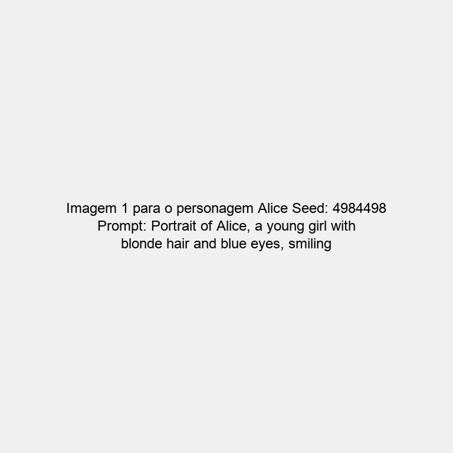
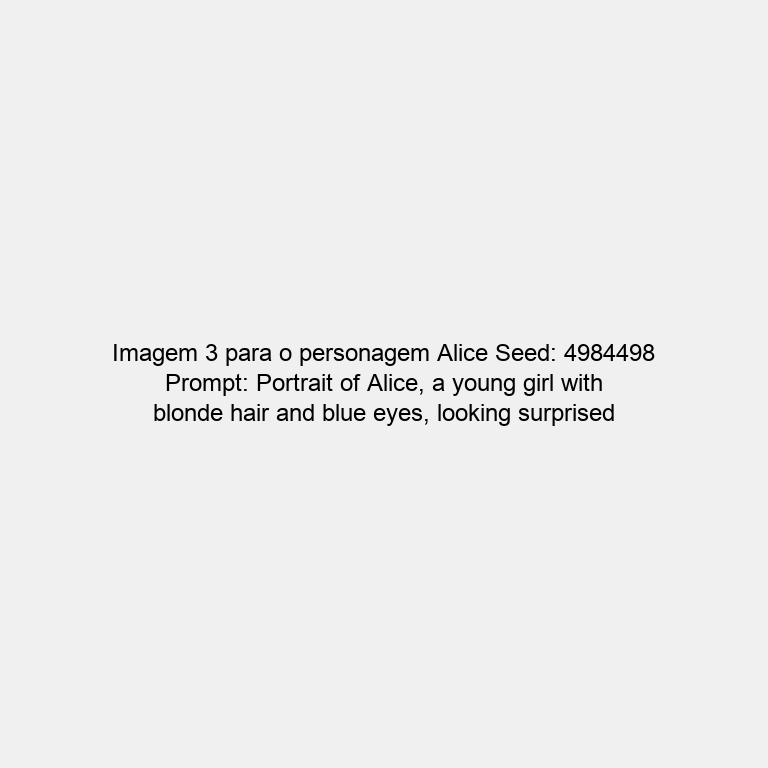
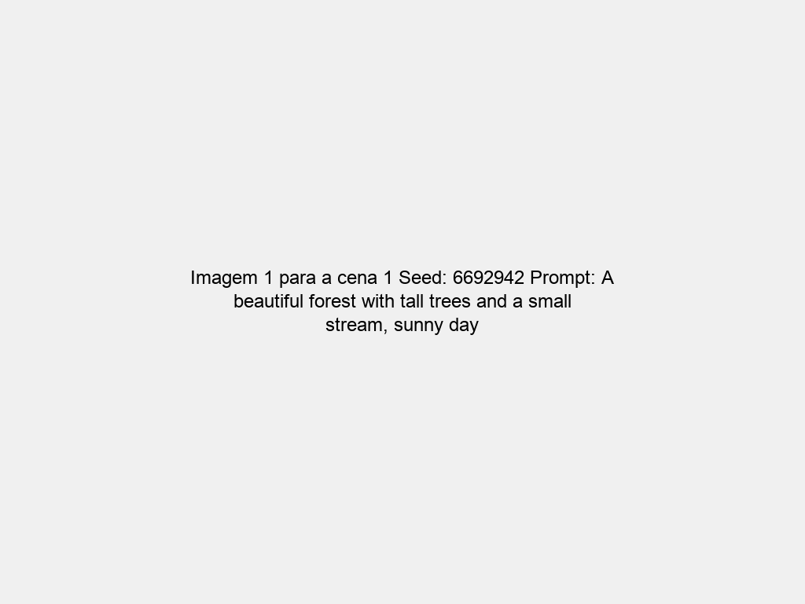
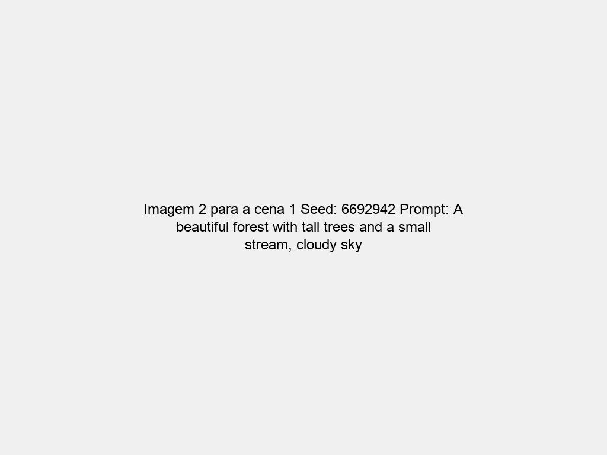
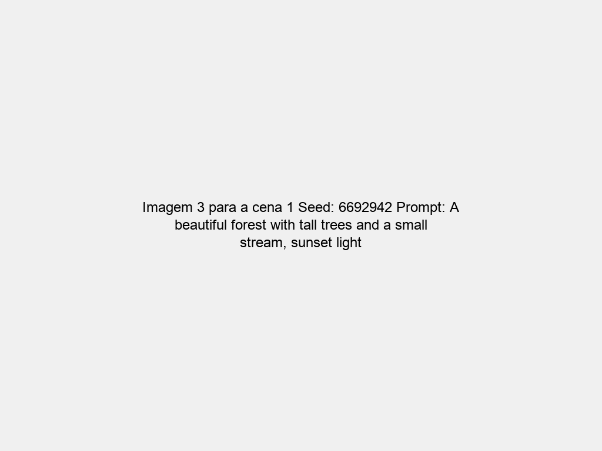
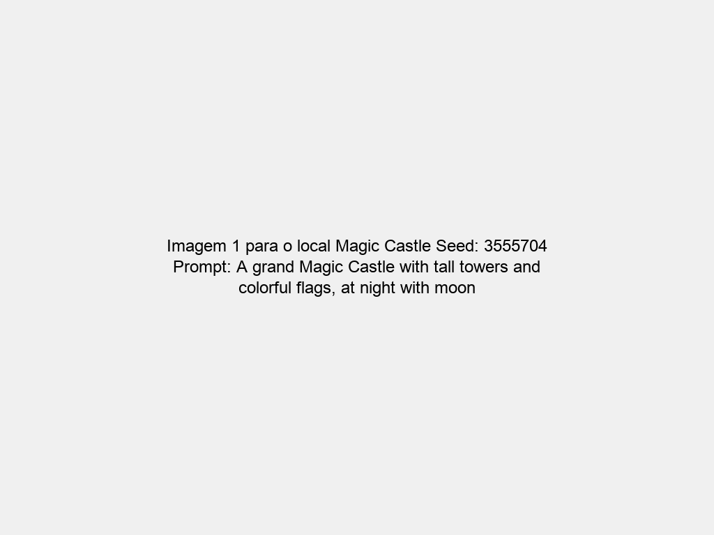
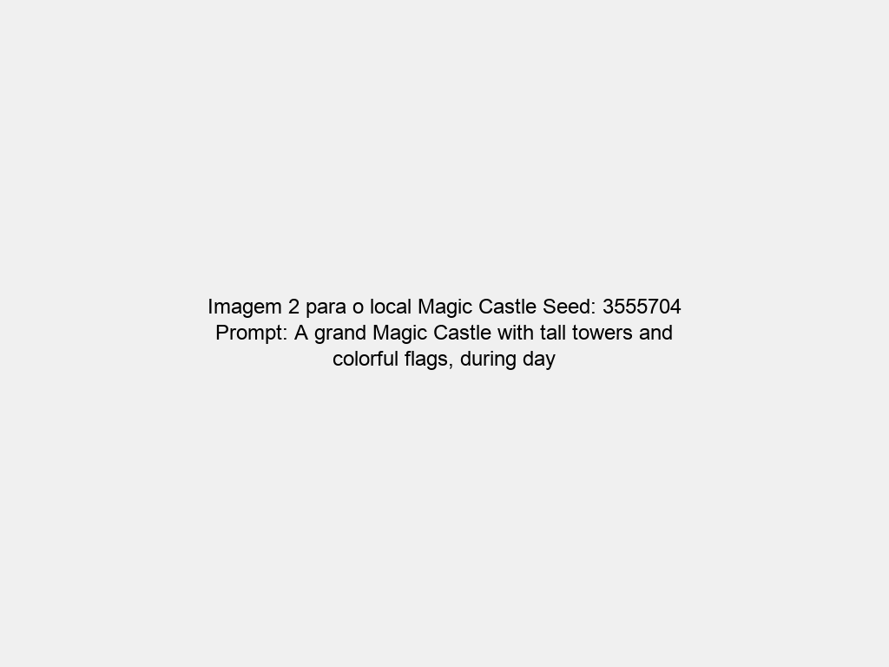

Este teste demonstra como o sistema de gerenciamento de seeds mantém a consistência visual nas imagens geradas.







Este teste demonstra que o sistema de gerenciamento de seeds está funcionando corretamente. Ao usar o mesmo seed para cada personagem, cena ou local, garantimos que as características visuais fundamentais permaneçam consistentes, mesmo quando os prompts variam ligeiramente.
Em um ambiente de produção com APIs reais de geração de imagens (como Stability AI), esses seeds garantiriam que os personagens, cenas e locais mantenham uma aparência consistente ao longo de toda a narrativa, o que é essencial para criar histórias animadas coerentes e de alta qualidade.